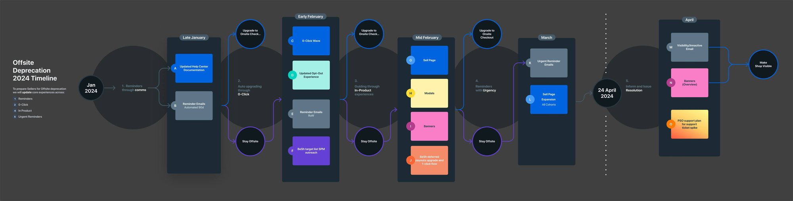
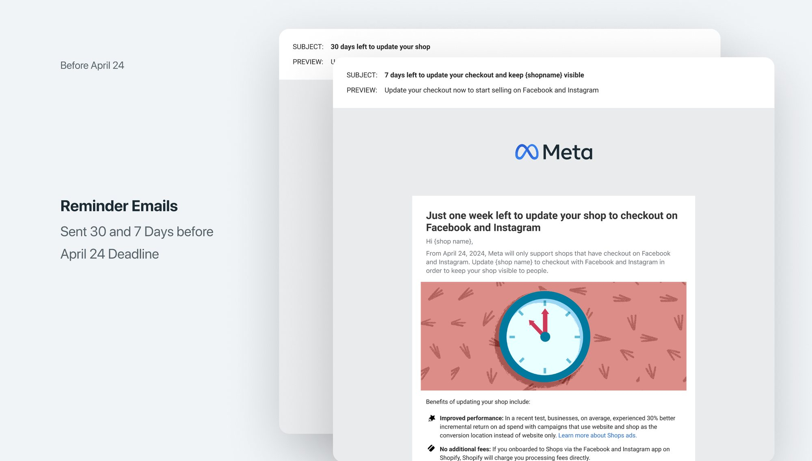
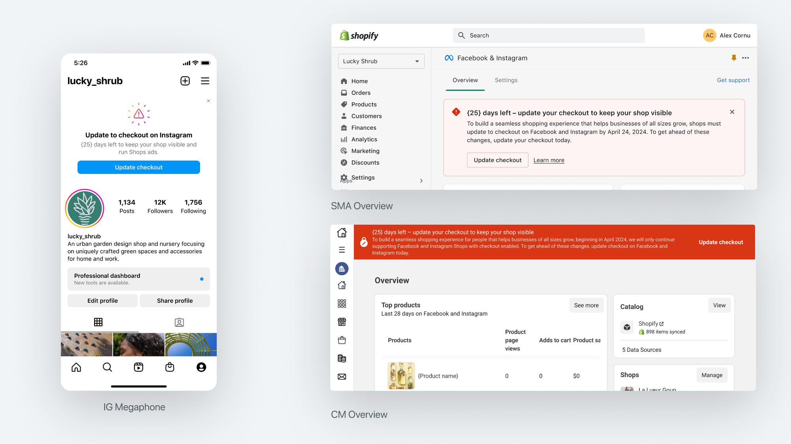
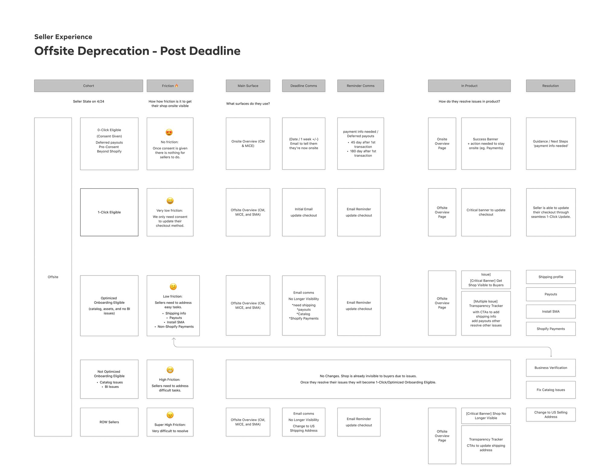
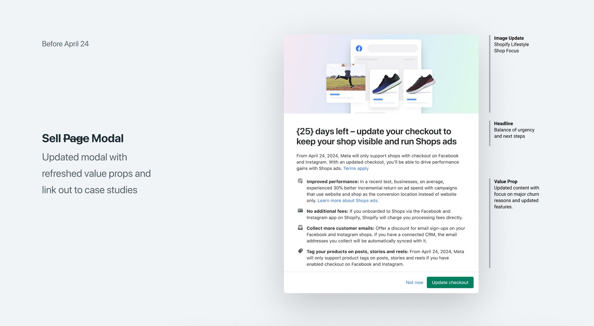
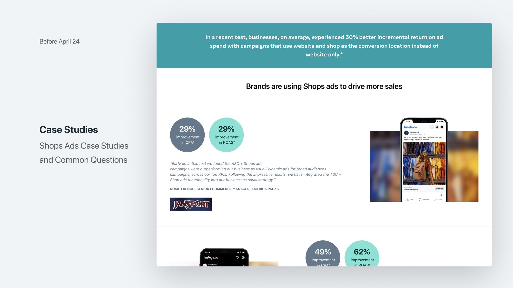

Driving $8B+ growth through offsite-to-onsite migration
As the sole designer for the Shopify Meta App, I led the end-to-end design strategy that moved Shopify’s largest merchants from offsite ads to onsite Shop Ads without disrupting their business.
Overview
In 2024, Meta underwent a strategic shift to deprecate “Offsite” ads (which drive traffic to external websites) in favour of “Onsite” Shop Ads. As the sole designer for the Shopify Meta App (SMA), I was responsible for the end-to-end design strategy to ensure Shopify’s largest merchants could migrate successfully without business disruption.

The Challenge
We were tasked with a Total Addressable Market (TAM) goal of $7.8B. The primary hurdle was the high level of friction and merchant confusion surrounding the deprecation.
- Low conversion, initial data showed that only 5% of merchants were successfully completing the onboarding flow for Shop Ads.
- Complex ecosystem, the migration touched multiple surfaces (reminder emails, help centres, in-product banners and Instagram prompts), creating a fragmented experience.
- Team transition, I supported 9 engineers during a period of high change, including a mid-project Product Manager transition, which required me to take a more active lead in maintaining project momentum and scope.

Strategic Approach
To manage the scale of this migration, I categorised our design efforts into two distinct workstreams.
1. Pre-deadline “levers” (nudges), I led cross-functional workshops to audit the merchant journey. We identified that merchants weren’t ignoring the change; they simply didn’t understand the immediate impact on their ad performance. We deployed:
- Contextual banners, clear, jargon-free warnings within the Shopify Meta App.
- IG AYMT (Are You Missing This?), native prompts within Instagram to meet sellers where they were already active.

2. Post-deadline “forcing functions”, details of the post-migration experience to come.

Implementation & Collaboration
Success in this project relied on high-intensity collaboration and “quality guardianship.”
- Handling scope creep, I proactively identified gaps in the onboarding logic and implemented ad-hoc design syncs to keep the engineering team aligned when PM support was limited.
- Systematic design, I updated design libraries and Source of Truth (SOT) documents to ensure edge cases, such as varied seller segments, were captured and handled consistently across the platform.


Results & Impact
The migration effort met and exceeded the core business objectives for 2024:
- Market growth, helped grow the business from $5.5B to $8.2B TAM, exceeding the revised goal by $400M.
- Conversion leap, onboarding conversion rates increased from 5% to 24% following the redesign of the flow.
- Deliverability, the ad deliverable rate (the percentage of ads successfully running) rose from 30% to 52%.
- Adoption, successfully migrated 29% of the overall TAM to the onsite Shop Ads experience.

Reflection
This project demonstrated the importance of systems thinking over pure UI design. By auditing the entire ecosystem, from email to app, we were able to move a massive segment of users through a difficult transition. It reinforced the value of being a design lead who can step in to provide strategic clarity during periods of organisational change.